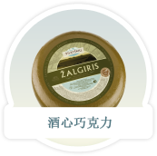
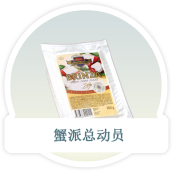
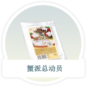
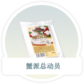

公司简介
美食汇国际控股有限公司是中国领先的烘焙产品连锁经营商。我们自1992年起生产及销售烘焙产品，是最早进入国际市场的外资投资烘焙企业之一。据Euromonitor的资料，于2010年12月31日，我们拥有及经营国际销售烘焙产品的最大(就收益及零售门店数目而言)一家零售连锁店。
我们主要在长江三角地区的黄金地段及主要城市进行营运，包括上海、江苏省及浙江省。截至2011年12月31日，共有898间零售门店，形成多管道零售网路，通过好邻居店、地线店、旗舰店及欧式现烤店吸引不同客户分部。我们销售逾2,200种面包、蛋糕、月饼、甜点及若干其他产品，更每月推出多种新产品，满足消费者的不同需求。我们拥有五家中央烘焙工厂，集中采购材料，重视产品的安全、营养及品质稳定性。
 

